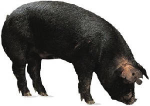
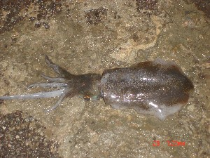
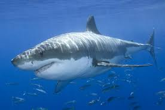
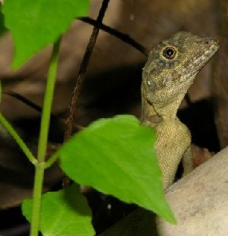
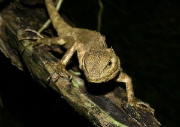

Ɖ - ɖ
ɖɑkɑr डाकार VAR: ɖɑkɑɽ डाकाड़. N सं. a variety of potato; एक प्रकार का आलू. SD: edible item, खाद्य सामग्री. SEE: dɑkɑr1 ‘potato’ ‘आलू दाकारhm:{1}’; dɑkɑr2 ‘this (proximate)’ ‘यह (निकटस्थ) दाकारhm:{2}’.Environmental
ɖɑm डाम V क्रि. see; देखा.
ɖe डे V क्रि. shut up; चुप होना. ŋɑli-ɖe ङालीडे. Please you shut up. आप चुप हो जाइए।.
ɖebe डेबे MORPH: ɖe-be. V क्रि. be quiet; चुप होना. ŋu-ɖebe ङू डेबे. You keep quiet. तुम शांत हो जाओ।.
ɖec डेच N सं. cataract; मोतियाबिंद. SD: illness, रोग.
ɖekʰo1 डेखो VAR: ɖekʰɔ डेखौ; dekʰol-o देखोलो; dekʰɔ देखौ. ADJ वि. enough; पर्याप्त. SD: quantifier, परिमाण वाचक. SEE: ɖekʰo2 ‘now’ ‘अब; अभी डेखोhm:{2}’.
ɖekʰo2 डेखो VAR: ɖekʰɔ डेखौ; dekʰol-o देखोलो; dekʰɔ देखौ. ADV क्रि वि. now; अब; अभी. SD: time, समय. SEE: ɖekʰo1 ‘enough’ ‘पर्याप्त डेखोhm:{1}’.
ɖekʰomɑkʰɑjiyo डेखोमाखाजीयो VAR: ɖekomɑːkkɑjiyo डेकोमाऽक्काजीयो. ADJ वि. ancient; प्राचीन, ऐतिहासिक. SD: attribute, विशेषता.
ɖekʰoʈɔpʰet डेखोटौफेत MORPH: ɖekʰo-ʈɔpʰet. V क्रि. be satisfied; संतुष्ट. ɖekʰo-ʈɔpʰet bɔm डेखो टौफेत बौम. He is satisfied. वह संतुष्ट है।.
ɖekʰoulekɔ डेखोऊलेकौ N सं. ejaculation; स्खलन. SD: body product, शरीर से उत्पन्न.
ɖekɔc डेकौच V क्रि. learn; सीखना. ɖekɔc u-i-kuni-m-e डेकौच ऊईकूनीमे. (He) picks up songs easily. (वह) गाना जल्दी सीख लेता है।.
ɖekʰɔokʰɔɲɑ डेखौओखौञा ADJ वि. aware; जागरूक. SD: attribute, विशेषता.
ɖekʰɔršibibibɑʈo डेखौरशीबीबीबाटो MORPH: ɖe-kʰɔr-šibi-bi-bɑʈo. N सं. darkness; अंधेरा. SD: attribute, विशेषता.
ɖello डेल्लो N सं. ball; गेंद. SD: sports, खेल-कूद.
ɖelɔ डेलौ N सं. a kind of tree used for making boats; एक प्रकार का पेड़ जो डोंगी बनाने के काम आता है. SD: flora, फूल-पत्ती.Environmental
ɖes डेस ADJ वि. hazy; धुंधला. SD: natural environment, प्राकृतिक वातावरण.Environmental
ɖi डी Etym: Bo; बो. PRN सर्व. third singular (distant, visible); तृतीय एकवचन (दूरस्थ, दिखने वाला). ɖi iɖirim be डी ईडीरीम बे. He is dark. वह काला है।. SD: pronominal, सर्वनाम.
ɖiːɖe डीऽडे N सं. noon; दोपहर. SD: time, समय.
ɖiɖek1 डीडेक VAR: ɖiɖiek डीडीएक. N सं. morning; sunrise; सुबह; सूर्योदय. SD: time, समय, natural environment, प्राकृतिक वातावरण. SEE: ɖiɖek2 ‘now; today’ ‘अभी; आज डीडेकhm:{2}’; ɖiɖek3 ‘yesterday’ ‘कल (बीता हुआ) डीडेकhm:{3}’.Environmental
ɖiɖek2 डीडेक VAR: ɖiɖiek डीडीएक. ADV क्रि वि. now; today; अभी; आज. SD: time, समय. SEE: ɖiɖek1 ‘morning; sunrise’ ‘सुबह; सूर्योदय डीडेकhm:{1}’; ɖiɖek3 ‘yesterday’ ‘कल (बीता हुआ) डीडेकhm:{3}’.
ɖiɖek3 डीडेक ADV क्रि वि. yesterday; कल (बीता हुआ). SD: time, समय. SEE: ɖiɖek1 ‘morning; sunrise’ ‘सुबह; सूर्योदय डीडेकhm:{1}’; ɖiɖek2 ‘now; today’ ‘अभी; आज डीडेकhm:{2}’.
ɖiːɖetteclɑːw डीऽडेत्तेचलाऽव N सं. ghost, wild; जंगली भूत. SD: supernatural, अलौकिक.Environmental
ɖik1 डीक VAR: ɖiːko डीऽको; ɖiːk डीऽक. N सं. a devil; एक पौराणिक चरित्र, एक दैत्य. SD: mythology, पौराणिक. SEE: ɖik2 ‘prawn-like creature’ ‘झींगा की तरह का जीव डीकhm:{2}’.
ɖik2 डीक N सं. prawn-like inedible creature; झींगा की तरह का अखाद्य जीव. SD: marine, समुद्री. SEE: ɖik1 ‘devil; mythological being’ ‘दैत्य; पौराणिक चरित्र डीकhm:{2}’.Environmental
ɖikʰili डीखीली N सं. sugarcane; गन्ना. SD: flora, फूल-पत्ती, edible item, खाद्य सामग्री.Environmental
ɖikʰolo डीखोलो V क्रि. got away; दूर चले जाना.
ɖikʰɔlɔ डीखौलौ INTJ वि बो. now, it’s enough; अब बस है. SD: attribute, विशेषता.
ɖikʰɔmɑ डीखौमा ADV क्रि वि. already; पहले से ही. ʈʰu ino-bi ɖikʰɔmɑ i-kʰue ठू ईनोबी डीखौमा ईखूए. I have already had water. मैं पहले से ही पानी पी चुका हूं।. SD: time, समय. NT: Preverbal for past perfect. क्रिया से पहले लगने वाला प्रत्यय जो पूर्ण भूतकाल का द्योतक है।.
ɖileʈmorɑbɑʈʰeme डीलेटमोराबाठेमे MORPH: ɖileʈmorɑ-bɑʈʰeme. N सं. handball game; हाथ से खेला जाने वाला गेंद का खेल. SD: sports, खेल-कूद.
ɖileʈmorɑʈʰulimu डीलेटमोराठूलीमू MORPH: ɖileʈmo-rɑ-ʈʰul-imu. V क्रि. kick the ball; गेंद खेलना. SEE: ɑrɑʈʰul ‘kick’ ‘मारना; ठोकर मारना आराठूल ’.
 ɖirebe1 डीरेबे VAR: iɖireːkkom ईडीरेऽक्कोम; ɖire-bi डीरेबी. V क्रि. dive; गोता लगाना; तैरना. u-ɖire-kɔm ऊडीरे कौम. He dives in the water. वह पानी में कूदता है।. SEE: ɖirebe2 ‘sink; drown’ ‘डूबना डीरेबेhm:{2}’.
ɖirebe1 डीरेबे VAR: iɖireːkkom ईडीरेऽक्कोम; ɖire-bi डीरेबी. V क्रि. dive; गोता लगाना; तैरना. u-ɖire-kɔm ऊडीरे कौम. He dives in the water. वह पानी में कूदता है।. SEE: ɖirebe2 ‘sink; drown’ ‘डूबना डीरेबेhm:{2}’.
 ɖirebe2 डीरेबे VAR: iɖireːkkom ईडीरेऽक्कोम; ɖire-bi डीरेबी. V क्रि. sink; drown; डूबना. SEE: ɖirebe1 ‘dive’ ‘गोता लगाना; तैरना डीरेबेhm:{1}’.
ɖirebe2 डीरेबे VAR: iɖireːkkom ईडीरेऽक्कोम; ɖire-bi डीरेबी. V क्रि. sink; drown; डूबना. SEE: ɖirebe1 ‘dive’ ‘गोता लगाना; तैरना डीरेबेhm:{1}’.
 ɖirim1 डीरीम ADJ वि. black; काला. ŋio ɖirim be ङीओ डीरीम बे. You are black. तुम काले हो।. SD: attribute, विशेषता. SEE: ɖirim2 ‘opium’ ‘अफ़ीम डीरीमhm:{2}’.
ɖirim1 डीरीम ADJ वि. black; काला. ŋio ɖirim be ङीओ डीरीम बे. You are black. तुम काले हो।. SD: attribute, विशेषता. SEE: ɖirim2 ‘opium’ ‘अफ़ीम डीरीमhm:{2}’.
ɖirim2 डीरीम N सं. opium; अफ़ीम. SD: edible item, खाद्य सामग्री. SEE: ɖirim1 ‘black’ ‘काला डीरीमhm:{1}’.Environmental
 |
 ɖirimrɑː डीरीमराऽ MORPH: ɖirim-rɑː. N सं. pig, black; काला सूअर. SD: animal, जानवर.
ɖirimrɑː डीरीमराऽ MORPH: ɖirim-rɑː. N सं. pig, black; काला सूअर. SD: animal, जानवर.
ɖiʈek डीटेक N सं. midday sun; afternoon; दोपहर. SD: natural environment, प्राकृतिक वातावरण.Environmental
 |
ɖiʈʰu डीठू N सं. a kind of fish; स्याही मछली. SD: fish, मछली.Environmental
 ɖiu1 डीऊ Etym: Jeru; जेरू. VAR: ɖiyuw डीयूव. ADJ वि. hot; sunny; गर्मी; उजला. ʈʰut ɖiu birɑle kɔm ठूत डीऊ बीराले कौम. It will take the whole day. इसमें पूरा दिन लग जाएगा।. SD: natural environment, प्राकृतिक वातावरण. SEE: ɖiu2 ‘sun’ ‘सूरज डीऊhm:{2}’; ɖiu3 ‘sunlight’ ‘धूप डीऊhm:{3}’.Environmental
ɖiu1 डीऊ Etym: Jeru; जेरू. VAR: ɖiyuw डीयूव. ADJ वि. hot; sunny; गर्मी; उजला. ʈʰut ɖiu birɑle kɔm ठूत डीऊ बीराले कौम. It will take the whole day. इसमें पूरा दिन लग जाएगा।. SD: natural environment, प्राकृतिक वातावरण. SEE: ɖiu2 ‘sun’ ‘सूरज डीऊhm:{2}’; ɖiu3 ‘sunlight’ ‘धूप डीऊhm:{3}’.Environmental
 |
 ɖiu2 डीऊ Etym: Jeru; जेरू. VAR: ɖiyuw डीयूव. N सं. sun; सूरज. SD: natural environment, प्राकृतिक वातावरण. SEE: ɖiu1 ‘hot; sunny’ ‘गर्मी; उजला डीऊhm:{1}’; ɖiu3 ‘sunlight’ ‘धूप डीऊhm:{3}’.Environmental
ɖiu2 डीऊ Etym: Jeru; जेरू. VAR: ɖiyuw डीयूव. N सं. sun; सूरज. SD: natural environment, प्राकृतिक वातावरण. SEE: ɖiu1 ‘hot; sunny’ ‘गर्मी; उजला डीऊhm:{1}’; ɖiu3 ‘sunlight’ ‘धूप डीऊhm:{3}’.Environmental
 |
 ɖiu3 डीऊ Etym: Jeru; जेरू. VAR: ɖiyuw डीयूव. N सं. sunlight; धूप. SD: natural environment, प्राकृतिक वातावरण. SEE: ɖiu1 ‘hot; sunny’ ‘गर्मी; उजला डीऊhm:{1}’; ɖiu2 ‘sun’ ‘सूरज डीऊhm:{2}’.Environmental
ɖiu3 डीऊ Etym: Jeru; जेरू. VAR: ɖiyuw डीयूव. N सं. sunlight; धूप. SD: natural environment, प्राकृतिक वातावरण. SEE: ɖiu1 ‘hot; sunny’ ‘गर्मी; उजला डीऊhm:{1}’; ɖiu2 ‘sun’ ‘सूरज डीऊhm:{2}’.Environmental
ɖiubɑlɑ डीऊबाला DEIXIS डीक्सीस. afternoon; दोपहर, दिन के बारह बजे के बाद. SD: time, समय.
ɖiuberɑceʈo डीऊबेराचेटो DEIXIS डीक्सीस. evening, around three to four p.m; तीसरा पहर, दिन के तीन-चार बजे के पास. SD: time, समय.
ɖiubetoncɔlɔ डीऊबेतोन्चौलौ MORPH: ɖiu-beton-cɔlɔ. N सं. solar eclipse; सूर्यग्रहण. SD: natural environment, प्राकृतिक वातावरण.Environmental
ɖiubikɑtʰu डीऊबीकाथू MORPH: ɖiu-bi-kɑ-tʰu. DEIXIS डीक्सीस. time, around sunrise; सूर्योदय के आस-पास का समय. SD: time, समय.
 |
 ɖiucɔm डीऊचौम N सं. big dangerous shark known to topple boats; विशाल ख़तरनाक शार्क जो नाव भी उलट देती है. SD: fish, मछली.Environmental
ɖiucɔm डीऊचौम N सं. big dangerous shark known to topple boats; विशाल ख़तरनाक शार्क जो नाव भी उलट देती है. SD: fish, मछली.Environmental
 |
 ɖiukɑrɑ डीऊकारा MORPH: ɖiu-kɑrɑ. N सं. direction of sunrise, east; सूर्योदय की दिशा, पूर्व दिशा. ɖiu kɑrɑ kɔm डीऊ एकारा कौम. The sun rises in the east. सूरज पूर्व से उगता है।. SD: natural environment, प्राकृतिक वातावरण.Environmental
ɖiukɑrɑ डीऊकारा MORPH: ɖiu-kɑrɑ. N सं. direction of sunrise, east; सूर्योदय की दिशा, पूर्व दिशा. ɖiu kɑrɑ kɔm डीऊ एकारा कौम. The sun rises in the east. सूरज पूर्व से उगता है।. SD: natural environment, प्राकृतिक वातावरण.Environmental
 |
ɖiukɔrɑle डीऊकौराले MORPH: ɖiu-kɔrɑle. N सं. sunset; सूर्यास्त. ɖiu-kɔrɑle-kɔm डीऊकौरालेकौम. The sun is setting. सूरज डूब रहा है।. SD: space, अन्तरिक्ष, natural environment, प्राकृतिक वातावरण.Environmental
ɖiumɛŋerco डीऊमैङेरचो MORPH: ɖiu-mɛŋer-co. ADV क्रि वि. midday sun; sun above my head; मध्य दोपहरी. SD: time, समय.
ɖiutɑrɑbɑt डीऊताराबात MORPH: ɖiu-tɑrɑ-bɑt. N सं. dusk; सांझ; गोधूलि बेला. SD: time, समय.
ɖiutɑrɑcɔi डीऊताराचौई MORPH: ɖiu-tɑrɑ-cɔi. N सं. squinting eyes; भेंगा. tʰɛr-ulu-rɑ- tɑrɛ-lom थैरऊलू रा तारैलोम. The light is making me squint. मेरी आंखें रोशनी के कारण चुंधिया रही हैं।. SD: attribute, विशेषता.
ɖiutɑrɑcɔl डीऊताराचौल Etym: Jeru; जेरू. N सं. sunlight; धूप. SD: natural environment, प्राकृतिक वातावरण.Environmental
 ɖiutɑrɑle1 डीऊताराले MORPH: ɖiu-tɑrɑ-le. N सं. sundown; setting sun; सूर्यास्त; डूबता सूरज. SD: natural environment, प्राकृतिक वातावरण. SEE: ɖiutɑrɑle2 ‘west’ ‘पश्चिम डीऊतारालेhm:{2}’.Environmental
ɖiutɑrɑle1 डीऊताराले MORPH: ɖiu-tɑrɑ-le. N सं. sundown; setting sun; सूर्यास्त; डूबता सूरज. SD: natural environment, प्राकृतिक वातावरण. SEE: ɖiutɑrɑle2 ‘west’ ‘पश्चिम डीऊतारालेhm:{2}’.Environmental
ɖiutɑrɑle2 डीऊताराले MORPH: ɖiu-tɑrɑ-le. DEIXIS डीक्सीस. west or direction in which the sun sets; पश्चिम या सूर्यास्त की दिशा. SD: direction, दिशा. SEE: ɖiutɑrɑle1 ‘sundown; setting sun’ ‘सूर्यास्त; डूबता सूरज डीऊतारालेhm:{1}’.Environmental
ɖiutɑrɑʈɛt1 डीऊताराटैत MORPH: ɖiu-tɑrɑ-ʈɛt. N सं. starfish; तारा मछली. SD: fish, मछली. SEE: ɖiutɑrɑʈɛt2 ‘sun; sunlight’ ‘सूर्य; धूप डीऊताराटैतhm:{2}’.Environmental
ɖiutɑrɑʈɛt2 डीऊताराटैत MORPH: ɖiu-tɑrɑ-ʈɛt. Etym: Khora; खोरा. N सं. sun; sunlight; सूर्य; धूप. SD: natural environment, प्राकृतिक वातावरण. SEE: ɖiutɑrɑʈɛt1 ‘fish’ ‘मछली डीऊताराटैतhm:{1}’.Environmental
 ɖiutɑrɑʈɛʈ डीऊताराटैट MORPH: ɖiu-tɑrɑ-ʈɛʈ. N सं. Sundial shell, a shell with circular black lines on top; एक प्रकार की काली गोल धारियों वाली सीपी. Architectonica, species of. SD: marine, समुद्री.Environmental
ɖiutɑrɑʈɛʈ डीऊताराटैट MORPH: ɖiu-tɑrɑ-ʈɛʈ. N सं. Sundial shell, a shell with circular black lines on top; एक प्रकार की काली गोल धारियों वाली सीपी. Architectonica, species of. SD: marine, समुद्री.Environmental
ɖiutemec डीऊतेमेच MORPH: ɖiu-temec. DEIXIS डीक्सीस. focus, of the sun towards Port Blair; पोर्ट ब्लेयर की तरफ़ सूरज का फ़ोकस. SD: navigation, नौका संचालन, direction, दिशा. NT: Refers to southern direction. दक्षिण दिशा.Environmental
ɖiuterbec डीऊतेरबेच MORPH: ɖiu-ter-bec. N सं. hiding of the sun behind clouds; बदली में छुपा सूरज. SD: natural environment, प्राकृतिक वातावरण.Environmental
ɖiutercek डीऊतेरचेक MORPH: ɖiu-tercek. VAR: ɖiutɛrcek डीऊतैरचेक. MORPH: ɖiu-tɛrcek. VAR: ɖiutɛrcɛkʰ डीऊतैरचैख. N सं. hot; scorching sunshine; piercing sunlight; गर्मी; तमतमाती धूप; चौंधियाने वाली धूप. SD: natural environment, प्राकृतिक वातावरण.Environmental
ɖiutɛrcɔkʰo डीऊतैरचौखो MORPH: ɖiu-tɛr-cɔkʰo. N सं. strong sun; तेज़ धूप. SD: natural environment, प्राकृतिक वातावरण.Environmental
ɖiyuwfitʰil डीयूवफीथील MORPH: ɖiyuw-fitʰil. N सं. sun rays; सूर्य की किरणें. SD: natural environment, प्राकृतिक वातावरण.Environmental
ɖob डोब N सं. food, uncooked; कच्चा खाना. SD: cooking & food, खाना-पीना.
 |
 ɖolemu डोलेमू VAR: ɖolemo डोलेमो. N सं. chameleon; a kind of lizard; एक प्रकार का गिरगिट; छिपकली. Coryphophylax. SD: reptile, रेंगने वाले जंतु. NT: It sticks out its neck. अपनी गर्दन ज़ोर से बाहर की ओर निकालता है।.Environmental
ɖolemu डोलेमू VAR: ɖolemo डोलेमो. N सं. chameleon; a kind of lizard; एक प्रकार का गिरगिट; छिपकली. Coryphophylax. SD: reptile, रेंगने वाले जंतु. NT: It sticks out its neck. अपनी गर्दन ज़ोर से बाहर की ओर निकालता है।.Environmental
 |
ɖoletmu डोलेत्मू N सं. a kind of reptile called the Andaman Islands day gecko; एक प्रकार का रेंगनेवाला जीव. Phelsuma andamanense. SD: reptile, रेंगने वाले जंतु. NT: Found only in the Andamans. It is emerald green with a bright red tongue. पन्ने जैसा हरे रंग का, चमकीली लाल जीभ वाला यह जीव अण्डमान द्वीपों पर मुख्यतः पाया जाता है।.Environmental
ɖop डोप ADJ वि. raw; unripe; कच्चा. kɔpʰo-ɖop कौफोडोप. raw banana. कच्चा केला. SD: attribute, विशेषता.
 |
ɖoutɑrɑcɑ डोऊताराचा MORPH: ɖou-tɑrɑ-cɑ. N सं. nest, of red ants; लाल चींटियों का घोंसला. SD: habitat, रहन-सहन.
 |
ɖowlu डोवलू VAR: ɖoulu डोऊलू; ɖowlo डोवलो. N सं. a big red ant which is found on tree trunks; बड़ी लाल चींटी जो पेड़ के तने पर पाई जाती है. Oecophylla smaragdina. ɖowlu ʈʰu bi oko डोवलू ठू बी ओको. An ant bit me. चींटी ने मुझे काटा।. SD: insect & invertebrate, कीट-पतंग एवं अरीढ़ जीव.Environmental
ɖu- डू- VAR: ɖuio- डूईओ-. CLT क्लिटिक. clitic, third singular (distant, invisible); तृतीय एकवचन क्लिटिक (दूरस्थ, जो दिखाई न दे). ɖu kɑmpɑunder ot ɲo be डू काम्पाऊन्देर ओत ञो बे. That is the compounder’s house. वह स्वास्थ्य अधिकारी का घर है।. ɖut tʰire डूत थीरे. his child. उसका बच्चा. ɖu ɑkɑ-jero be डू आकाजेरो बे. He is Jeru. वह जेरो है।. SD: grammar, व्याकरण.
ɖuɑmo डूआमो N सं. newborn pig; सूअर का बच्चा. SD: animal, जानवर. NT: Piglet in the first stage of four measured stages. सूअर के शारीरिक विकास के चार चरणों में पहला चरण।.
ɖuɡleber डूगलेबेर MORPH: ɖuɡ-leber. Etym: Pujjukar; पुज्जूकर. N सं. lighthouse; प्रकाशगृह. SD: navigation, नौका संचालन.Environmental
ɖuɡuleber डूगूलेबेर MORPH: ɖuɡu-leber. N सं. front of the seashore which is closest to the jungle; जंगल के पास वाले समुद्रतट का अगला भाग. SD: habitat, रहन-सहन. NT: This word is used as deictic marker to specify exact location. यह शब्द स्थानवाचक संज्ञा के रूप में भी प्रयोग होता है।.
ɖuiso डूईसो GEN सं का. his/her (distant); उसका/ उसकी (दूरस्थ). ɖu-iso-cɔkbi डूईसोचौक्बी. his/her turtle. उसका कछुआ. SD: pronominal, सर्वनाम.
ɖukʰe डूखे MORPH: ɖu-ukʰe. ADJ वि. another; दूसरा. SD: quantifier, परिमाण वाचक.
 ɖulɑo डूलाओ VAR: ɖu-lɑːw डूलाऽव. N सं. monster; ghost; spirit; राक्षस; दैत्य; भूत. SD: supernatural, अलौकिक.Environmental
ɖulɑo डूलाओ VAR: ɖu-lɑːw डूलाऽव. N सं. monster; ghost; spirit; राक्षस; दैत्य; भूत. SD: supernatural, अलौकिक.Environmental
ɖulimo डूलीमो VAR: ɖolemo डोलेमो; ɖulemo डूलेमो. N सं. chameleon; lizard; गिरगिट; छिपकली. SD: reptile, रेंगने वाले जंतु.Environmental
ɖulobil डूलोबील MORPH: ɖulo-b-il. N सं. period of one month; महीना भर. ʈʰu ʈʰibit ɲyok ɖulobil tʰuo ठू ठीबीत ञ्योक्डूलोबील थूओ. It has been a month since I have been staying at home. मुझे घर में रहते हुए एक महीना हो गया।. SD: time, समय.
ɖuːlofɔrɔ डूऽलोफौरौ MORPH: ɖuːlo-fɔrɔ. N सं. moon, full; पूर्णिमा. SD: natural environment, प्राकृतिक वातावरण.Environmental
ɖulokɑntuse डूलोकान्तूसे MORPH: ɖulo-kɑn-tuse. N सं. fortnight; पखवाड़ा. SD: time, समय.
ɖulokɑrɑ डूलोकारा MORPH: ɖulo-kɑrɑ. DEIXIS डीक्सीस. west, direction in which the moon sets; पश्चिम, चंद्रास्त की दिशा. SD: direction, दिशा.Environmental
 |
 ɖulopʰidil डूलोफीदील MORPH: ɖulo-pʰidil. VAR: ɖulɔ-ɸidil डूलौफीदील. N सं. moonlight; full moon; चांदनी; पूर्णिमा. SD: natural environment, प्राकृतिक वातावरण.Environmental
ɖulopʰidil डूलोफीदील MORPH: ɖulo-pʰidil. VAR: ɖulɔ-ɸidil डूलौफीदील. N सं. moonlight; full moon; चांदनी; पूर्णिमा. SD: natural environment, प्राकृतिक वातावरण.Environmental
ɖulopʰɔrɔk डूलोफौरौक MORPH: ɖulo-pʰɔrɔk. N सं. big moon; बड़ा चांद. SD: natural environment, प्राकृतिक वातावरण.Environmental
ɖulotɑrɑle डूलोताराले MORPH: ɖulo-tɑrɑle. DEIXIS डीक्सीस. east, lit. direction of moonrise; पूर्व, शाब्दिक अर्थः चंद्रोदय की दिशा. SD: direction, दिशा.Environmental
ɖuːlotɑrɑːwto डूऽलोताराऽवतो MORPH: ɖuːlo-tɑrɑːwto. N सं. third quarter-moon; तीज का चांद. SD: natural environment, प्राकृतिक वातावरण.Environmental
ɖulotɛrkʰuro डूलोतैरखूरो MORPH: ɖulo-tɛr-kʰuro. N सं. full moon; पूरा चांद, पूर्णिमा. SD: natural environment, प्राकृतिक वातावरण.Environmental
ɖuːlotʰirɛ डूऽलोथीरै MORPH: ɖuːlo-tʰirɛ. N सं. first quarter-moon; पहली चौथ का चांद. SD: time, समय.
 ɖulɔ डूलौ VAR: ɖulo डूलो. N सं. moonlight; moon; month; चांदनी रात; चांद; महीना. ɖulo tɑrɑ otɔ डूलो तारा ओतौ. Dawn is approaching. सुबह होने वाली है।. SD: natural environment, प्राकृतिक वातावरण.Environmental
ɖulɔ डूलौ VAR: ɖulo डूलो. N सं. moonlight; moon; month; चांदनी रात; चांद; महीना. ɖulo tɑrɑ otɔ डूलो तारा ओतौ. Dawn is approaching. सुबह होने वाली है।. SD: natural environment, प्राकृतिक वातावरण.Environmental
ɖulɔbetoncɔlo डूलौबेतोन्चौलो MORPH: ɖulɔ-beton-cɔlo. N सं. lunar eclipse; चंद्रग्रहण. SD: natural environment, प्राकृतिक वातावरण.Environmental
ɖulɔtɑrɑcɔl डूलौताराचौल MORPH: ɖulɔ-tɑrɑ-cɔl. N सं. light of the moon; चांदनी. SD: natural environment, प्राकृतिक वातावरण.Environmental
ɖum1 डूम N सं. centipede; कनखजूरा; ईल्ली. SD: insect & invertebrate, कीट-पतंग एवं अरीढ़ जीव. SEE: ɖum2 ‘earthworm’ ‘केंचुआ डूमhm:{2}’; ɖum3 ‘fly, newborn’ ‘मक्खी, शिशु डूमhm:{3}’.Environmental
ɖum2 डूम N सं. earthworm; केंचुआ. SD: insect & invertebrate, कीट-पतंग एवं अरीढ़ जीव. SEE: ɖum1 ‘centipede’ ‘कनखजूरा; ईल्ली डूमhm:{1}’; ɖum3 ‘fly, newborn’ ‘मक्खी, शिशु डूमhm:{3}’.Environmental
 ɖum3 डूम N सं. newborn fly just hatched from eggs; शिशु मक्खी जो अण्डे के फूटने पर निकलती है. kʰider kotrɑkɔ ɖum de खीदेर कोत्राकौ डूम दे. The coconut is infected with flies. नारियल के अंदर मक्खियां (कीड़े) हैं।. SD: insect & invertebrate, कीट-पतंग एवं अरीढ़ जीव. SEE: ɖum1 ‘centipede’ ‘कनखजूरा; ईल्ली डूमhm:{1}’; ɖum2 ‘earthworm’ ‘केंचुआ डूमhm:{2}’.Environmental
ɖum3 डूम N सं. newborn fly just hatched from eggs; शिशु मक्खी जो अण्डे के फूटने पर निकलती है. kʰider kotrɑkɔ ɖum de खीदेर कोत्राकौ डूम दे. The coconut is infected with flies. नारियल के अंदर मक्खियां (कीड़े) हैं।. SD: insect & invertebrate, कीट-पतंग एवं अरीढ़ जीव. SEE: ɖum1 ‘centipede’ ‘कनखजूरा; ईल्ली डूमhm:{1}’; ɖum2 ‘earthworm’ ‘केंचुआ डूमhm:{2}’.Environmental
ɖumto डूमतो N सं. a kind of tree; एक प्रकार का पेड़. SD: flora, फूल-पत्ती.Environmental
ɖune डूने PRN सर्व. third plural (distant, invisible); तृतीय बहुवचन (दूरस्थ, अदृश्य). SD: pronominal, सर्वनाम.
ɖunio डूनीओ VAR: ɖunɑ डूना; ɖu-niyo डूनीयो. PRN सर्व. third plural (distant, visible); तृतीय बहुवचन (दूरस्थ, दिखाई देनेवाला). ɖunio n-ɑmbikʰir cɔkbi-bi ji-k-ɔ डूनीओ नामबीखीर चौक्बीबी जीकौ. They ate turtle last morning. उन्होंने कल सुबह कछुआ खाया।. ɖunɑ jero be डूना जेरो बे. They are Jeru. वह जेरो है।. SD: pronominal, सर्वनाम.
ɖuniso डूनीसो MORPH: ɖun-iso. GEN सं का. their; उनका. SD: grammar, व्याकरण.
ɖuŋ डूङ N सं. an insect that lives in salt water; खारे पानी में रहने वाला कीड़ा. SD: marine, समुद्री. NT: It may be red, black or white. लाल, काले और सफ़ेद रंग में पाया जाने वाला।.Environmental
 ɖuoc डूओच VAR: ɖuos डूओस. V क्रि. hear; सुनना. SEE: ɑkɑbiŋe ‘listen’ ‘सुनो आकाबीङे ’.
ɖuoc डूओच VAR: ɖuos डूओस. V क्रि. hear; सुनना. SEE: ɑkɑbiŋe ‘listen’ ‘सुनो आकाबीङे ’.
ɖuokʰɑ डूओखा DEIXIS डीक्सीस. that one (distant); वह वाला (दूरस्थ). SD: reference, संदर्भ.
ɖup डूप N सं. Jingam tree; जिंगम पेड़. SD: flora, फूल-पत्ती. NT: A kind of tree used for making canoes, the dongi. डोंगी बनाने में प्रयुक्त।.Environmental
ɖup डूप N सं. Khawha fish; खौहा मछली. SD: fish, मछली.Environmental